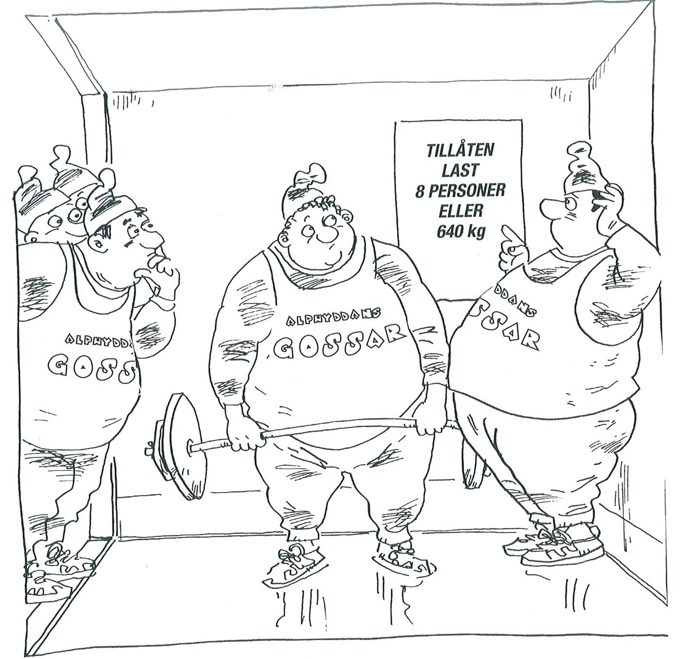

8. Konnektiv och sanningsvärden
Vad betyder instruktionen på hissens vägg? Är det tillåtet för fem tyngdlyftare att använda hissen, om var och en av dem väger 130 kg? Hur är det med 12 magra gossar, som väger 50 kg? Hur är det med en ensam tyndlyftare?

För att undersöka problem som ovan använder vi oss av sanningsvärden och sanningsvärdetabeller. Varje påstående kan ha två värde, antingen är det sant, eller så är det falskt. Sanna värden betecknar vi med 1 och falska värden med 0.
Då vi jobbar med sanningsvärden och sanningsvärdetabeller utnyttjar vi oss också av konnektiv. Konnektiven är lite som räknesätten då vi räknar med siffor. Vi har konnektiven: negation, disjunktion, konjuktion, implikation och ekvivalen.
Negation
Negation betyder det motsatta. Vi får följande sanningsvärdetabell.
| \( A \) | \( \neg A \) |
|---|---|
| 1 | 0 |
| 0 | 1 |
Disjunktion
Disjunktionen tolkas som eller, antingen skall \(A \) eller \( B \) vara sann för att disjunktionen är sann.
| \( A \) | \( B \) | \( A \vee B \) |
|---|---|---|
| 1 | 1 | 1 |
| 1 | 0 | 1 |
| 0 | 1 | 1 |
| 0 | 0 | 0 |
Konjunktion
Disjunktionen tolkas som och, då skall \(A \) och \( B \) vara sanna samtidigt för att konjuktionen är sann.
| \( A \) | \( B \) | \( A \wedge B \) |
|---|---|---|
| 1 | 1 | 1 |
| 1 | 0 | 0 |
| 0 | 1 | 0 |
| 0 | 0 | 0 |
Implikation
Implikationen tolkas som "om A så B". Av konnektiven är det den som ställer till med mest problem. För att implikationen gäller att sant leder till sant. Något falskt leder inte till något sant, medan falskt alltid leder till något sant.
| \( A \) | \( B \) | \( A \Rightarrow B \) |
|---|---|---|
| 1 | 1 | 1 |
| 1 | 0 | 0 |
| 0 | 1 | 1 |
| 0 | 0 | 1 |
Ekvivalens
Ekvivalens betyder att två uttryck är identiska. Vi tolkar ekvivalen som en dubbel implikation. Alltså \( A \Leftrightarrow B \) som \( (A \Rightarrow B) \wedge (B \Rightarrow A) \).
Vi får sanningstabellen
| \( A \) | \( B \) | \( A \Rightarrow B \) | \( B \Rightarrow A \) | \( A \Leftrightarrow B \) |
|---|---|---|---|---|
| 1 | 1 | 1 | 1 | 1 |
| 1 | 0 | 0 | 1 | 0 |
| 0 | 1 | 1 | 0 | 0 |
| 0 | 0 | 1 | 1 | 1 |
Exempel 1 Vi beteckar A: "det regnar", B: "det blåser" och C: "det är molnigt". Översätt till svenska
- \( A \wedge (B \vee C) \)
- \( (A \wedge B) \vee C \)
Lösning
Vi får
- \( A \wedge (B \vee C) \) ordagrant blir det "Det regnar och det blåser eller det är molnigt". På bättre svenska kunde vi säga: "Antingen blåser det eller är mulet då det regnar".
- \( (A \wedge B) \vee C \) ordagrant blir det "Det regnar och blåser eller det är molnigt". På bättre svenska kan vi säga: "Det regnar och blåser eller så är det mulet".
I exemplet ovan talar vi om att satsen är formaliserad, vi betecknar "det regnar" med ett A.
Sanningsvärden för en sats
Då vi bestämmer sanningsvärden för en sats utnyttjar vi sanningsvärdena för konnektiven och bildar en sanningsvärdetabell.
Exempel 2 Antag att satsen A lyder "det regnar" och satsen B "det blåser". Studera bilden. Är satsen sann?

- \( \neg A \)
- \( \neg B \)
- \( A \wedge B \)
- \( A \wedge \neg B \)
- \( A \vee B \)
- \( \neg A \vee B \)
- \( A \vee \neg B \)
Lösning
Vi översätter satserna till svenska och jämför med bilden.
- \( \neg A \), är "regnar inte". Satsen är falsk.
- \( \neg B \), är "det blåser inte". Satsen är sann.
- \( A \wedge B \), är "det regnar och blåser". Satsen är falsk.
- \( A \wedge \neg B \)är "det regnar och blåser inte". Satsen är sann.
- \( A \vee B \), är "det regnar eller blåser". Satsen är sann.
- \( \neg A \vee B \), är "det regnar inte eller blåser". Satsen är falsk.
- \( A \vee \neg B \), är "det regnar eller blåser inte". Satsen är sann.
Exempel 3 Ungkarlen Mannerström är intresserad av invecklade brottsfall och är på besök hos patronen i Lillby. Någon har knyckt silverfatet som tillhör husets vakthund. Misstankarna riktas mot Atte, Beata och Calle. Tack vare en pålitlig ledtråd vet Mannerström att endast en av dessa tre är misstänkta är skyldiga till brottet.
Mannerstöm lyssnar, då länsman Neovius förhör de misstänkta.
"Min minnesbild är dunkel, men jag är övertygad om att jag eller Calle är skyldig", bekänner Atte.
"Jag var med Atte hela kvällen på dans i grannsocknen", försäkrar Beata.
"Atte eller Beata ljuger", påstår Calle.
Mannerström vet att i Lillby talar de oskyldiga sanning och de skyldiga ljuger. Efter förhören berättade Mannerström åt Neovius vem den skyldiga var. Vad sade Mannerstörm?
Lösning
Vi betecknar A: Atte är skyldig, B: Beata är skyldig och C: Calle är skyldig.
Vi gör en sanningsvärdetabell. Vi betecknar erkännandena med D, E och F, för att spara utrymme. I den sista kolumnen har vi alla erkännanden med konjuktion, eftersom de skall gälla samtidigt.
\( \begin{array}{|c|c|c|c|c|c|c|c|c|} \hline & & & D & & & E & F & \\ \hline A & B & C & A \vee C & \neg A & \neg B & \neg A \wedge \neg B & \neg(A \vee B) & D \wedge E \wedge F \\ \hline 1 & 1 & 1 & 1 & 0 & 0 & 0 & 0 & 0 \\ \hline 1 & 1 & 0 & 1 & 0 & 0 & 0 & 0 & 0 \\ \hline 1 & 0 & 1 & 1 & 0 & 1 & 0 & 0 & 0 \\ \hline 1 & 0 & 0 & 1 & 0 & 1 & 0 & 0 & 0 \\ \hline 0 & 1 & 1 & 1 & 1 & 0 & 0 & 0 & 0 \\ \hline 0 & 1 & 0 & 0 & 1 & 0 & 0 & 0 & 0 \\ \hline 0 & 0 & 1 & 1 & 1 & 1 & 1 & 1 & 1 \\ \hline 0 & 0 & 0 & 0 & 1 & 1 & 1 & 1 & 0 \\ \hline \end{array} \)
I sista kolumnen märker vi att vi har ett ställe med en 1:a. Då är Atte oskyldig, Beata oskyldig och Calle skyldig.
Alltså är Calle skyldig till att farit iväg med silverfatet. Det passar överrens med att de skyldiga ljuger.
Tautologi och logisk ekvivalens
Exempel 4 Nyhet från 3.4: "Genombrott i undersökningarna - Kasper är inte tjuv eller Jesper är oskyldig". Dagen efter låter rubriken som: "En ny vändning i skandalbrottet - Om Kasper är tjuv så är Jesper oskyldig". Är det någon skillnad på nyheterna från 3.4 och 4.4?
Lösning
Vi betecknar A: "Kasper skyldig" och B: "Jesper är oskyldig". Vi får sanningsvärdetabellen
\( \begin{array}{|c|c|c|c|c|c|c|c|} \hline A & B & \neg A & \neg A \vee B & A \Rightarrow B\\ \hline 1 & 1 & 0 & 1 & 1\\ \hline 1 & 0 & 0 & 0 & 0\\ \hline 0 & 1 & 1 & 1 & 1\\ \hline 0 & 0 & 1 & 1 & 1\\ \hline \end{array} \)
Vi märker att satserna betyder det samma. Det är ingen skillnad på rubrikerna till nyheterna.
Satser som ger samma resultat är ekvivalenta. De är satslogiskt samma sak.
Uppgifter
- Vi betecknar A: "Kasper är tjuv", B: "Jesper är tjuv" och C: "Jonatan är tjuv". Översätt till svenska.
- \( A \wedge B \)
Kasper och Jesper är tjuvar.
- \( A \vee B \)
Kasper eller Jesper är tjuv.
- \( A \wedge B \wedge \neg C \)
Kasper och Jesper är tjuvar och Jonatan är inte en tjuv.
- \( \neg(A \wedge B) \)
Kasper och Jesper är inte båda tjuvar.
- \( \neg(A \vee B) \)
Varken Kasper eller Jonatan är tjuvar.
- \( A \to (B \vee C) \)
Om Kasper är tjuv, så är Jesper eller Jonatan tjuv.
- \( A \wedge B \)
- Välj satserna P och Q så att satsen i formaliserad form är \( P \to \neg Q \).
- Om jag cyklar, så har jag inte bil.
P: "jag cyklar", Q: "jag kör bil"
- Jag äter inte efterrätt, om jag har bråttom.
P: "jag har bråttom", Q: "jag äter efterrätt"
- Om läraren inte skyndar på, så lär jag mig detta.
P: "läraren skyndar inte på", Q: "jag lär mig inte detta"
- Jag lär mig detta endast om läraren inte skyndar på.
P: "jag lär mig detta", Q: "läraren skyndar på"
- Om jag cyklar, så har jag inte bil.
- Sammanställ en sanningstabell för satserna \( \neg A \vee \neg B \) och \( \neg (A \wedge B) \). Jämför sanningstabellerna.
Översätt satserna ovan till svenska, då satsen A lyder "Kasper är skyldig" och satsen B "Jesper är skyldig".
Vi får
\( \begin{array}{|c|c|c|c|c|} \hline A & B & \neg A & \neg B & \neg A \vee \neg B \\ \hline 1 & 1 & 0 & 0 & 0 \\ \hline 1 & 0 & 0 & 1 & 1 \\ \hline 0 & 1 & 1 & 0 & 1 \\ \hline 0 & 0 & 1 & 1 & 1 \\ \hline \end{array} \)
Vi får
\( \begin{array}{|c|c|c|c|} \hline A & B & A \wedge B & \neg (A \wedge B) \\ \hline 1 & 1 & 1 & 0 \\ \hline 1 & 0 & 0 & 1 \\ \hline 0 & 1 & 0 & 1 \\ \hline 0 & 0 & 0 & 1 \\ \hline \end{array} \)
Satserna ger samma sanningsvärdetabell.
Vi får "Kasper eller Jesper är oskyliga" och "Kasper och Jesper är inte båda skyldiga".
- Är satsen en tautologi? Översätt satsen till svenska, då satsen A lyder "det regnar".
- \( A \vee A \)
Nej
- \( A \wedge A \)
Nej
- \( A \to A \)
Ja
- \( A \leftrightarrow A \)
Ja
- \( A \vee \neg A \)
Ja
- \( \neg (A \wedge \neg A) \)
Ja
- \( A \vee A \)
- Är följande satser sanna?
- \( A \to (B \vee \neg B) \)
Alltid sann.
- \( A \to (B \wedge \neg B) \)
Då A är falsk.
- \( (A \vee \neg A) \to B \)
Då B är sann.
- \( (A \wedge \neg A) \to B \)
Alltid sann.
- \( A \to (B \vee \neg B) \)
- I Kamomilla stad har någon knyckt rosor ur borgmästarens blomsterrabatt. Amatördetektiv Mannerström erhöll en lapp med texten: \( (A \wedge B \wedge \neg C) \vee (A \wedge \neg B \wedge \neg C) \). Senare fick han nyckeln till chifferskriften: A: "Kasper är skyldig", B: "Jesper är skyldig" och C: "Jonatan är skyldig".
Mannerström hade från pålitliga källor fått veta att informationen på lappen var sann. Vilket budskap erhöll Mannerström?
Gör en sanningsvärdetabell och kom fram till två rader: A har värdet 1, B har värdet 1 och C har värdet 0. Den andra raden är A har värdet 1, B har värdet 0 och C har värdet 0.
Vi kan dra slutsatsen att Kasper är skyldig och Jonatan är oskyldig. Jesper kan vara skyldig eller oskyldig.
- I Kamomilla stad hade någon knyckt ventilgummit på rektorns cykel. Amatördetetkiv Mannerström erhöll igen ett hemlighetsfullt budskap. Budskapet innehöll följande text: \( (\neg A \vee (B \wedge \neg C)) \vee ((\neg A \vee \neg B) \wedge \neg C) \). Mannerström lyckades upptäcka chifferskriftens nyckel: A: "Kasper är skyldig", B: "Jesper är skyldig" och C: "Jonatan är skyldig".
Mannerström var övertygad om att någon sänt ett falskt budskap för att vilseleda honom. Vilken slutsats drog han av budskapet?
Kasper och Jonatan är skyldiga. Jesper kan vara skyldig eller oskyldig.
- Amatördetektiv Mannerström är åter gäst hos patronen i Lillby. Någon har med leriga gummistövlar gått över salens ljusa matta. Misstankarna riktas igen mot Atte, Beata och Calle. Mannerström är övertygad om att någon av dem är skyldig. Länsman Neovius förhör de misstänkta. I Lillby ljuger de skyldiga alltid och de oskyldiga talar sanning.
"Calle är säkert skyldig", påstår Atte. "Atte är oskyldig och jag är oskyldig", tillägger Beata. "Atte är oskyldig eller jag är skyldig", tvekar Calle.
Efter att ha funderat en stund avslöjade Mannerström den skyldiga. Vad sade Mannerström?
Beata är skyldig.
Vi kommer åt det via en sanningsvärde tabell. I de tre sista kolumnerna bildar vi värdena då alla tre vittnesmål skall gälla samtidigt och någon dera av dem ljuger.
\( \begin{array}{|c|c|c|c|c|c|c|c|c|} \hline A & B & C & \neg A & \neg B & \neq A \wedge \neg B & \neg A \vee C & \text{A ljuger} & \text{B ljuger} & \text{C ljuger} \\ \hline 1 & 1 & 1 & 1 & 0 & 0 & 1 & 0 & 1 & 0 \\ \hline 1 & 1 & 0 & 1 & 0 & 0 & 0 & 0 & 0 & 0 \\ \hline 1 & 0 & 1 & 1 & 1 & 0 & 1 & 0 & 1 & 0 \\ \hline 1 & 0 & 0 & 1 & 1 & 0 & 0 & 0 & 0 & 0 \\ \hline 0 & 1 & 1 & 1 & 0 & 0 & 1 & 0 & 1 & 0 \\ \hline 0 & 1 & 0 & 0 & 0 & 0 & 1 & 0 & 0 & 0 \\ \hline 0 & 0 & 1 & 1 & 1 & 1 & 1 & 0 & 0 & 0 \\ \hline 0 & 0 & 0 & 0 & 1 & 1 & 1 & 1 & 0 & 0 \\ \hline \end{array} \)
På om Atte ljuger är alla oskyldiga. Om Calle ljuger stämmer inga vittnesmål. Det betyder att Beata är skyldig.
- Amatördetektiv Mannerström är på resa och en förtvivlad länsman Neovius är tvungen att förlita sig på en spåman: "Man har berättat för mig att om Jesper är oskyldig, så är Kasper oskyldig. Kan jag lita på denna information?"
"Om Kasper är oskyldig håller informationen streck", svarar spåmannen. Vilken slutsats kan Neovius dra av svaret?
Ingen. Spåmannens sats är alltid sann.
- Bilda med hjälp av konnektiv någon sats P av satserna A och B. Satsen P har följande sanningstabell.
- Den första sanningstabellen är
\( \begin{array}{|c|c|c|} \hline A & B & P \\ \hline 1 & 1 & 0 \\ \hline 1 & 0 & 1 \\ \hline 0 & 1 & 0 \\ \hline 0 & 0 & 0 \\ \hline \end{array} \)
Till exempel \( A \wedge \neg B \)
Den andra är
\( \begin{array}{|c|c|c|} \hline A & B & P \\ \hline 1 & 1 & 1 \\ \hline 1 & 0 & 0 \\ \hline 0 & 1 & 1 \\ \hline 0 & 0 & 1 \\ \hline \end{array} \)
Till exempel \( (A \wedge B) \vee (\neg A \wedge B) \vee (\neg A \wedge \neg B) \) eller \( \neg(A \wedge B) \) eller \( \neg A \vee B \).
- Den första sanningstabellen är
- Under min resa till Narrarnas och riddarnas ö mötte jag av två öbor, Anders och Bernhard. Under vår diskussion sade Anders: "Om jag är riddare, så är också Bernhard riddare". Är det möjligt att avgöra om Anders och Bernhard är narrar eller riddare?
Ja, båda är riddare.
- Då jag diskuterade med två andra öbor, Anna och Bo, sade Anna: "Om Bo är riddare, så är jag en narr". Vad för något är Anna och Bo?
Anna är riddare och Bo är narr.
- En gång tillbringade jag kvällen tillsammans med tre öbor; Atte, Börje och Cecilia. Vid ett visst skede berättade Atte: "Börje är riddare". Något senare nämnde Börje: "Om Atte är riddare, så är också Cecilia riddare". Vad för något är Atte, Börje och Cecilia?
Alla är riddare.
- På ön spriddes ett rykte enligt man funnit guld i bergen på öns sydspets. En invånare på ön kommenterade ryktet och sade: "Det finns guld på ön sydspets om och endast om jag är riddare."
- Är invånaren narr eller riddare?
Vilkendera som helst.
- Finns det guld på ön?
Ja, det finns det.
- Är invånaren narr eller riddare?
- På Stollarnas ö talar man ett språk som har en invecklad satskonstruktion: "A lirum B larum C". Ön har besök av språkvetare och de har dragit slutsatsen att konstruktionen följer följande tabell.
\( \begin{array}{|c|c|c|c|} \hline A & B & C & A \text{ lirum } B \text{ larum } C\\ \hline 1 & 1 & 1 & 1 \\ \hline 1 & 1 & 0 & 0 \\ \hline 1 & 0 & 1 & 1 \\ \hline 1 & 0 & 0 & 1 \\ \hline 0 & 1 & 1 & 1 \\ \hline 0 & 1 & 0 & 1 \\ \hline 0 & 0 & 1 & 1 \\ \hline 0 & 0 & 0 & 1 \\ \hline \end{array} \)
Översätt till svenska satsen "bälä bää lirum bölö böö larum höbö höö", där "bälä bää" betyder "du äter morgongröten", "bölö böö" betyder "du slutar leka" och "höbö höö" betyder "vi går på cirkus".
"Du äter inte morgongröten eller du slutar inte leka eller vi går på cirkus", som är logiskt ekvivalent med "om du äter morgongröten och slutar leka, så går vi på cirkus".
Narrarnas och riddarnas ö
Skådeplatsen får många logiska problem är den berömda Narrarnas och riddarnas ö. Varje invånare är på ön antingen narr eller riddare. Narrarna ljuger alltid och riddarna talar alltid sanning. Följande fyra uppgifter skildrar händelser på Narrarnas och riddarnas ö.